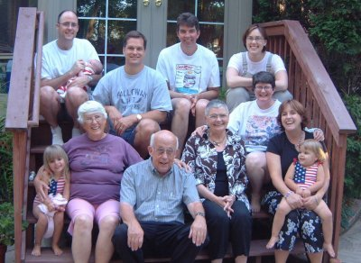

Welcome to the World, Jack! (3 pictures)
Isaac has graciously agreed to take second stage today so his brand-new, 12-hour-old cousin can take the lime light. At 9:22 a.m. Atlanta time, Doug's sister, Sarah, gave birth to a healthy, happy, wonderfully perfect baby boy.

He weighed in at 9 lbs., 2 oz., same as Ike did at birth. His name is Kedrik (after his dad) Jackson (after Doug and Sarah's grandpa) Merwin. He'll be called Jack. The whole family, including big sisters Madeline and Chloe, are doing well.

In honor of Jack's birthday, we're throwing in an older family photo -- from July 4th weekend when Ike was just one month old (he's so tiny!). Jack's sisters are in the ever-so-cute flag swimsuits; Jack's mom is holding Chloe in the front row; Jack's dad is in the gray t-shirt.

WELCOME TO OUR FAMILY, JACK! WE CAN'T WAIT TO MEET YOU!
Posted by Sara